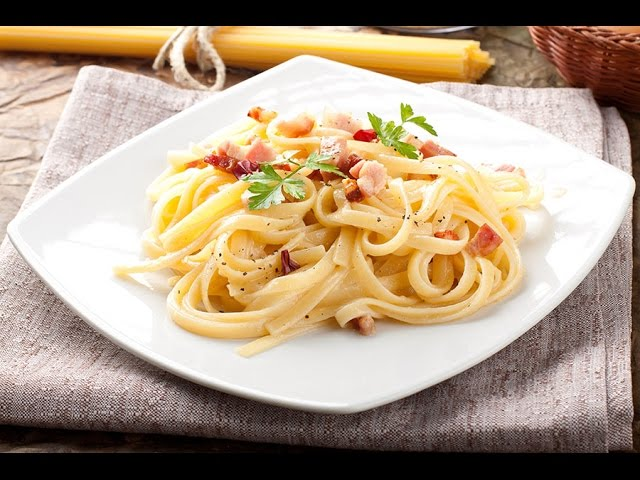

Carbonara Paste

Description of Carbonara Paste
Pasta carbonara is the most popular Italian pasta in the world. The secret of its popularity is not only
in the availability of ingredients and cooking time. The main thing is that it has a unique taste -
creamy and delicate, although real pasta carbonara is prepared without cream. It is important to
follow the cooking recipe to get the right sauce.
Ingredients for Carbonara Paste
- Spaghetti - 400 g
- Bacon - 200 g
- Chicken eggs - 4 pieces
- Parmesan cheese - 50 g
- Butter - 20 g
- Olive oil - 1 spoon
- Garlic - 2 cloves
- Water - 2.3 liters
- Salt
- Ground black pepper
Steps for making Carbonara Paste
- Cut the bacon into cubes. Crush two cloves of garlic with a knife.
Heat the frying pan, melt 1 tablespoon of butter and fry the bacon with garlic. Fry on low heat
for 10 minutes, the fat should melt out of the bacon, but the bacon should remain soft. After frying,
remove the garlic.
-
In boiling water (2.3 liters), add 1 tablespoon of salt, 1 tablespoon of olive oil and spaghetti. We
cook spaghetti asindicated on their packaging, it is important to observe the specified cooking time in
order to cook spaghetti correctly.
- We separate 3 yolks from proteins. Put the yolks and one egg in a bowl, salt and pepper (1 pinch each),
beat well.
-
Add 2 tablespoons of grated cheese, mix.
- Ready-made spaghetti is thrown into a colander, after leaving 300 ml of water in which they were cooked.
- Turn off the heat under the frying pan with bacon, add spaghetti and 1 tablespoon of butter.
Pour in the beaten eggs with cheese, mix everything thoroughly.
Gradually add 300 ml of broth (water) from the spaghetti and mix constantly, the eggs should not curdle.
- To thicken the sauce a little, turn on a low heat under the pan and stir constantly for about 1
minute so that the eggs do not boil. If the sauce turns out to be very thick, you can add more broth.
- Spread the spaghetti on a plate, sprinkle with ground black pepper and grated cheese on top.
Pasta carbonara is ready.Enjoy your meal.